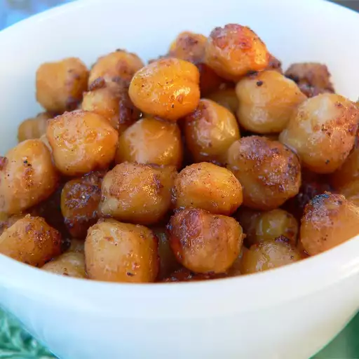

Spiced roasted chickpeas recipe

These roasted chickpeas are seasoned with Indian spices to make crisp, spicy little nibbles.
These spicy roasted chickpeas are great as a snack, appetizer, made into wraps or paired with your favorite Indian meal.
A member of the legume family, chickpeas have a delicious nutty taste, creamy texture and are extremely nutritious. Slightly bigger in size than a pea, chickpeas may be tiny but are certainly well-deserving of their superfood status, being packed full of nutrients and health benefits.
Ingredients
- 2 cups canned chickpeas, rinsed and drained
- 1 tablespoon lemon juice
- 2 tablespoons olive oil
- 1 teaspoon brown sugar
- 1 1/2 teaspoons ground cumin
- 1 teaspoon garam masala
- 1 pinch ground black pepper
- 1 pinch cayenne pepper, or to taste
- 1/2 teaspoon salt, or to taste
Steps
- Preheat the oven to 400 degrees F (200 degrees C). Line a baking sheet with aluminum foil.
- Stir together chickpeas, lemon juice, olive oil, brown sugar, cumin, coriander, cinnamon, garam masala, black pepper, cayenne pepper, and salt in a mixing bowl. Spread chickpea mixture in a single layer on the prepared baking sheet.
- Roast in the preheated oven until chickpeas are dark brown in spots, crisp, and have shrunk quite a bit, 25 to 30 minutes, stirring halfway through the cooking time. Cool to room temperature before serving.